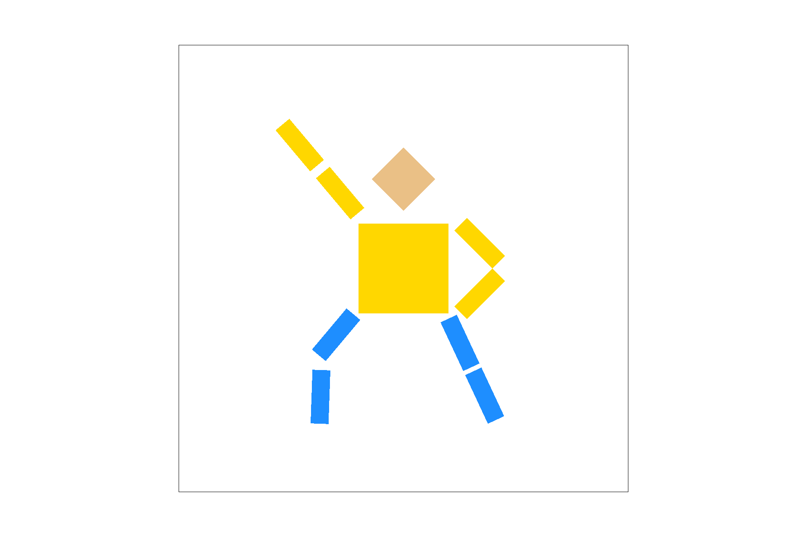

CS 184: Computer Graphics and Imaging, Spring 2019
Project 1: Rasterizer
Kevin Arias, CS184-aga
Overview
What I have implemented in this project is a simple rasterizer. When looking at images in a display, these images
are made up of a countless amount of colored pixels. When combined in the correct order, these pixels make up the
entirety of what you see on your display. What I have built here is a rasterizer that converts simple objects such
as points and triangles, into a collected group that help make up images and implement textures. Throughout this
project, I have been able to create my own functions that help perform supersampling, transforms that help model
and view images, and texture mapping alongside neat sampling methods. Together, these functions help model the
images on our display and provide antialiasing methods to help us with our ultimate goal of getting the cleanest
and sharpest images. This project has helped introduce me to the pretty scary world of computer graphics, and it
was pretty intimidating at first but I learned a lot. I found it very interesting how some of the most basic shapes
and objects help make up most images and displays that we tend to take for granted everyday. Whether it is watching a
still image, watching TV, or playing a videogame, just to get something to display on screen requires a lot of work
from our machines but with proper techniques and efficient sampling methods, what we see on our screens can look a
whole lot better and can perform more efficiently. By the end of this project, I built a functional vector graphics renderer that could display an
image from a modified Scalable Vector Graphics file.
Section I: Rasterization
Part 1: Rasterizing single-color triangles
For the first part of the project, I had to implement basic triangle rasterization. I was given three points that
made up a triangle and my goal was to iterate through pixels and determine whether or not each of those pixels centers was
inside the triangle (and by pixel center, I mean that if we are observing a pixel (x,y) we check whether (x+0.5, y+0.5) is
inside the triangle). In order to determine if a pixel’s center was inside a triangle or not, we must perform three
line equation tests. A line equation test multiplies each vector connecting two points of the triangle by its respective
normal line vector and this gives us a boundary.
By doing this with all three vectors connecting the triangle, we will get
three different line equation results that will basically form the boundaries of the triangle and allows us to distinguish
whether or not each pixel’s center is inside or outside this triangle boundary. If all three line equation test results are
positive, then our pixel center is inside the triangle. But in order for this to work, all normal vectors used during the line
equation tests must point toward the interior of the triangle which means that we must first organize the points given
to us to be in clockwise order before performing any calculations so that our line equation tests and triangle boundaries
are correct.
|
First Line Equation Test
|
Second Line Equation Test
|
|
Third Line Equation Test
|
Final Triangle Boundaries
|
Iterating through each and every pixel would be very costly however, so a more efficient way to get the same results
and traverse through all of the necessary pixels is to iterate through only the subset of pixels within the bounding
box of the triangle. We must determine the lowest and highest x and y values of the triangle and use those values to
create a boundary of what pixels to iterate and test. Anything outside that boundary will not be tested.
If we have decided that a pixel’s center is inside the triangle, we will then fill the pixel at samplebuffer[y][x]
with its respective color in the function fill_pixel(). Once we are done iterating through our selection of pixels,
samplebuffer will now contain all of the color values of the pixels and should display the correct colors at each pixel
of the image. Because this is a simple implementation of point sampling with only one sample per pixel, the images
should contain jaggies as shown below in my screenshot of basic/test4.svg:
 Pixel Sampling
Pixel Sampling
|
Part 2: Antialiasing Triangles
In the second part of the project, we had to implement supersampling. Supersampling is useful because it helps
remove the visual effect of jaggies by sampling each pixel more times and averaging all of the sub-pixel’s color
values in order to fill each pixel with a calculated average of colors. In point sampling, there is sudden and abrupt
change in colors between different pixels, but with supersampling, we can provide a more natural looking transition between
different pixel colors in an image.
|
Point Sampling
|
Supersampling
|
Everything from part one is reused for this part with the addition of some slight modifications in order to be able to
take into consideration each pixel’s subpixels. In part one, I used two for loops in rasterize_triangle() in order
to iterate through each x and y valued pixel of the image. In this part, each pixel is now divided into sample_rate amount of
sub-pixels so I nested two more for loops inside my previous two for loops so I could iterate through all
sub-pixels within each pixel. From here, we treat every sub-pixel like we would a regular pixel from part one,
first we would check whether each sub-pixel’s center was inside the triangle or not by using the line equation
tests again. If it is inside the triangle, we use the fill_color() method to fill the subpixel with its respective
color. In this part of the project, we also used samplebuffer’s sub_pixels vector in order to store the color of
each sub-pixel. After traversing through each sub-pixel of the selection of pixels in the image, samplebuffer should now contain
all of the colors of each sub-pixel in the sub_pixels vector but we still need to average the color of sub-pixels
within each pixel. To accomplish this, I had to modify get_pixel_color() so that we average all of the sub-pixel's colors
for each pixel in order to calculate the final outputted color for each pixel. Now when we draw the image out, we can adjust the
sample rate in order to perform supersampling. The higher the sample rate for each pixel, the less jaggy the
final image becomes.
|
Sample Rate 1
|
Sample Rate 4
|
We can see that supersampling provides a smoother transition between different pixels. As we increase the sample rate,
our image produces a cleaner image. These results are observed because previously with point sampling, a pixel may have
had a pretty significant amount of itself inside a traingle but since its center was not inside it was not filled. Once we get
to a very skinny triangle corner for instance, this becomes very apparent because the pixel becomes large in comparison
to the skinny traingle corner, thus causing the pixel not to be filled and making jaggies more prevalent. But with supersampling, we can see that the higher the
sampling rate, the more subpixels are sampled. This means that rather than not filling in a pixel with color because
its center is not inside the traingle, we can color in the pixel proportionally to the amount of sub-pixels that
are inside of the triangle, thus allowing pixels to blend with one another better and help produce a better overall image, especially in the skinny corner of the triangle whenever
we increase the sample rate higher and higher.
Part 3: Transforms
For this part, I had to implement matrix transformations. I had to implement transform, scale, and rotate matrix
tranformations by inputting the correct values in a Matrix3X3 struct. I modified the methods so that the matrices
used values in the order specified during lecture. As shown below, these are the positions each value had to be in in order to
render cubeman correctly:
 Cubeman in svg/transforms/robot.svg
Cubeman in svg/transforms/robot.svg
|
I have updated cubeman so that he is now doing something more interesting and groovy. I
positioned cubeman’s body parts so that he would be in the iconic Disco dance position of “The Point Move” as seen
in Disco themed movies. In order to position cubeman this way, I first had to rotate each of his individual legs and
arms by their respective amount. To go into more detail, I rotated both his left upper and lower arm together to be in the
pointing disco themed dance move. I also rotated his right upper arm and rotated his right lower arm even further
so that his right arm would be holding his hip. For his right leg, I rotated both his right lower and upper leg together so
his leg could be extended. I also rotated his left upper leg and rotated his left lower leg even further so that
his left leg would be in the proper stance for the dance move. Because I performed rotations, I also had to translate
each of his arms and legs so that his arms and legs would be attached to his body and there would not be any
abnormally sized gaps between any of his body parts. I also made cubeman’s outfit vibrantly Cal-themed, by making
his shirt yellow (#FFD700) and his pants blue (#1E8EFF):
|

Groovy Cubeman in docs/my_robot.svg
|
Section II: Sampling
Part 4: Barycentric coordinates
Barycentric Coordinates is a special coordinate system that allows us to describe a point within a triangle relative
to a triangle’s vertices. I tend to think of Barycentric Coordinates as weights that can determine whether a point
lies within the boundaries of a triangle. Barycentric Coordinates have many uses including being able to linearly
interpolate values at vertices that can represent colors, positions, or texture coordinates just to name a few. If we
assign colors to each vertex on the triangle, any (x,y) coordinate can be represented as the linear combination of
the vertex colors and barycentric coordinates (alpha, gamma, beta).
 Helpful Barycentric Coordinate Equations
Helpful Barycentric Coordinate Equations
|
If our Barycentric Coordinates were to be negative, then that means that our point is not inside the triangle. Let us say that we have three vertices forming a triangle that each
represent a color V_R (which represents the red part of the color spectrum in the triangle), V_G (which represents
the green part of the color spectrum in the triangle), and V_B (which represents the blue part of the color spectrum
in the triangle). We can choose any point V inside this triangle and we will get its respective color value by solving
for the Barycentric Coordinates (alpha, beta, gamma). By calculating the following equation (alpha * V_R) +
(beta * V_B) + (gamma * V_G) we should now get the resulting color that should be at our specific point V. We can
observe that our point V will have a (alpha * V_R) amount of red, a (beta * V_B) amount of blue, and a
(gamma * V_G) amount of green, and when linearly combined will result in point V’s designated color
|
Visualization of Barycentric Coordinates
|
Part 5: "Pixel sampling" for texture mapping
In this part of the project, we began to perform texture mapping and implementing pixel sampling. Pixel sampling allows us to interpolate colors
in texture space so that we can ultimately map a color on a texture to a specific (x,y) position in screen space.
In this part of the project we use two different pixel sampling methods in order to perform texture mapping:
nearest-pixel sampling and bilinear sampling. Regardless of pixel sampling method, we must first calculate the
barycentric coordinates based on our given (x,y) coordinate and three vertices of our given triangle. Now that
we have our barycentric coordinates, we can convert them to texture-space coordinates (u,v). This process is similar
to the process used in the previous part where we calculated the interpolated color of our selected point. We
must use our barycentric coordinates and our given (u,v) texture triangle vertices (which we must make
sure are clockwise oriented to maintain consistent orientations) and linearly interpolate them
to compute our texture-space coordinates (u,v). Here is where both pixel sampling methods begin to differ. For the
nearest-pixel sampling method, we must first scale our calculated (u,v) coordinate and scale it up to match the
texture’s size, and then we must take the pixel value that coincides with the closest texel. After this, we
just return the color of that sample. For bilinear sampling, we must first scale our calculated (u,v) coordinate
and scale it up to match the texture’s size, and then we observe the four closest texel coordinates. From here we
perform two rounds of linear interpolation (calculate two linear interpolations to account for horizontal factors
and one linear interpolation to account for the vertical). After this we should have now calculated the weighted
average color of the four closest texels of our (u,v) coordinate.
|
Nearest Sampling at 1 Sample Per Pixel
|
Bilinear Sampling at 1 Sample Per Pixel
|
 Nearest Sampling at 16 Samples Per Pixel
Nearest Sampling at 16 Samples Per Pixel
|
Bilinear Sampling at 16 Samples Per Pixel
|
One of the differences between nearest-pixel sampling and bilinear sampling is that bilinear sampling will be
computationally more expensive in comparison to nearest-pixel. Bilinear sampling requires 4 texel reads and 3 linear
interpolations whereas nearest-pixel sampling just requires one closest texel read and one linear interpolation to
compute the final outputted color. Where we as the observer will see the largest difference between the two pixel-sampling
methods is when we look at parts of an image with sharp edges, quick transitions between different colors, and where jaggies
are most frequent. To understand this, let us look at the case when a pixel is surrounded by neighboring pixels
with similar colors. If a pixel’s neighboring pixels have nearly identical colors, then using bilinear sampling would
be impractical because the color we get from linearly interpolating several times in bilinear sampling would be similar
to the color returned from nearest-pixel sampling. In these cases, there would be little to no difference between
bilinear and nearest-pixel sampling. But if we look at a case where there are abrupt changes in pixel colors between
neighboring pixels, sharp edges in the image, and jaggies, then nearest-pixel sampling will do very little to lessen
the amount of jaggies because it is just returning the color of the nearest pixel. But bilinear sampling will help
with antialiasing because at higher frequencies, interpolation of four pixels resulting in one averaged color will
help smoothen transitions between different colored neighboring pixels when our sampling rate might not be as high
to lessen jaggies.
Part 6: "Level sampling" with mipmaps for texture mapping
In this part of the project, we decided to implement level sampling with mipmaps for texture mapping. Sometimes a
pixel may end up covering an area that is either much larger or smaller than a single texel. Instead of using other
computationally intensive methods to account for this issue, we use mipmaps in order to allocate pixels to different
sized versions of the same texture. To begin level sampling we must first begin by taking an observed pixel point
(x,y) and calculating its barycentric coordinates in order to map it onto its corresponding texture coordinates
(u,v). Then we must also calculate the barycentric coordinates of (x+1,y) and (x,y+1) and map those points to their
corresponding texture coordinates. By finding the differences between our three calculated texture coordinates, we
will get our du/dx, dv/dx, du/dy, and dv/dy values that will then allow us to solve for what mipmap level D would be most
appropriate for these sets of texture coordinates:
The problem here
is that our calculated mipmap level may not always be an integer, it may be a number in between. And here is when
our three different level sampling methods begin to differ. For zero-th level mipmap sampling, we just use the exact
same process as that of part 5 and use the original texture size in order to interpolate and find the corresponding
color using the correct pixel sampling method. For nearest level sampling, we use the nearest appropriate mipmap level, scale up our (u,v) coordinates to
the corresponding mipmap level height and width, and pass those points to our pixel sampling methods in order to
get the correct resulting color. For bilinear level sampling, we do the exact same thing as with nearest level
sampling but instead of returning one color, we calculate the colors from both the rounded up and rounded down
mipmap levels and then linearly interpolate these colors to get the resulting average color which we then return based on our pixel sampling method.
This interpolation between levels makes the transition of mipmap levels smoother. And trilinear sampling is when
we use bilinear level sampling alongside bilinear pixel sampling. Below are images comparing the quality between different level and pixel sampling methods.
These images can be produced inside svg/texmap/mytest.svg:
|
L_ZERO and P_NEAREST
|
L_ZERO and P_LINEAR
|
|
L_NEAREST and P_NEAREST
|
L_NEAREST and P_LINEAR
|
Let us look at the tradeoffs between zero level sampling, nearest level sampling, and bilinear level sampling
in terms of speed. Zero level sampling was the fastest since we only need to compute one set of barycentric
coordinates and one pair of (u,v) coordinates for the texture. Nearest level sampling was the second fastest.
In nearest level sampling, we need to compute three sets of barycentric coordinates, three pairs of (u,v) coordinates,
and we also need to find the nearest level. Bilinear level sampling is the slowest of the three since we have to do
everything nearest level sampling does in addition to having to interpolate two different levels in the mipmap to
get a corresponding color. This makes bilinear level sampling very computationally expensive. In terms of antialiasing,
bilinear level sampling produced the best results which makes sense because in bilinear level sampling, we average colors
between two levels of mipmaps which will provide a more natural transition between different pixels. In terms of antialiasing power of pixel sampling methods, nearest-pixel sampling provided slightly
worse results to that compared of bilinear pixel sampling. If we ended up using bilinear pixel sampling alongside bilinear level sampling as well, we would
be performing trilinear sampling which produced the best results of all combinations but was the most computationally
intensive sampling method. While using a sample rate of 1, all three level sampling methods were quick, but as I
increased the sampling rates to 16, there was a noticeable difference in speed and memory usage for all three level
sampling methods.